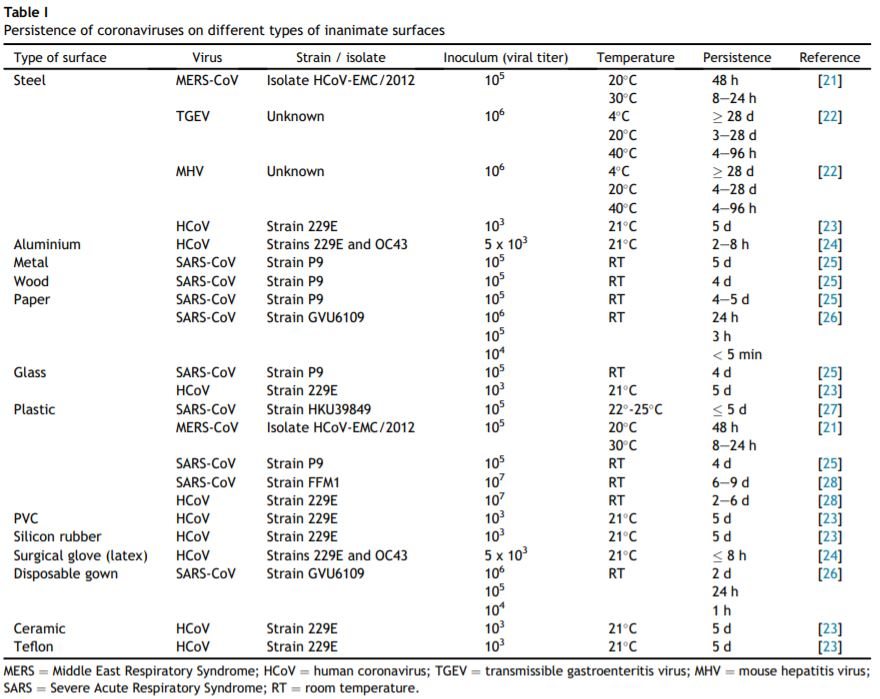
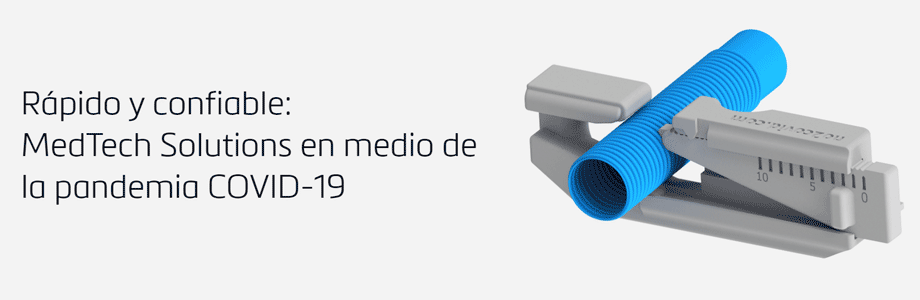

Wearable COVID-19
Diseño de Wearables para sobrevivir en escenarios perjudiciales para la salud.

Junto a Ignacio Saavedra estamos desarrollando un proceso de investigación respecto al COVID-19. Buscamos referentes actuales que nos brinden la mayor cantidad de información posible para desarrollar un proyecto futuro que se encargue de solucionar la movilidad en el contexto de pandemia y para re-diseñar y cuestionarnos cómo van a funcionar los objetos de ahora en adelante. El tema de movilidad abre diversas aristas que nos obligan a re-plantear ciertas costumbres en nuestra rutina diaria.
Dicho esto, con Carolina nos planteamos las siguientes preguntas: ¿Cuáles son los objetos clave en un entorno perjudicial para la salud?, ¿Cuál es el equipamiento indispensable para que la sociedad sobreviva y pueda desenvolverse en zonas de alto riesgo?, ¿Podemos realmente vivir sin salir de nuestras casas para siempre y trabajar desde las dichas?.
Superficies en las que el virus puede subsistir
Creemos que es importante considerar el material del objeto que vamos a desarrollar, debido al alto riesgo que implica manipular dispositivos que atraen el virus. Por esa razón queremos compartir la siguiente tabla:

Referentes
Recubrimientos antimicrobianos/11.03.2020
- Este equipamiento consiste en un recubrimiento hecho con polímero antimicrobiano que es efectivo para matar virus, bacterias e incluso esporas resistentes.
- “La esencia de la nueva tecnología de recubrimiento radica en la creación de restos de superficie que interrumpen activamente la envoltura microbiana y las biomoléculas, haciendo que los microorganismos sean inviables al contacto. El recubrimiento también evita la adhesión microbiana en la superficie y, por lo tanto, lo mantiene limpio de contaminantes microbianos.”

- Impreso en 3d en Materialise, por Madeleine Fiello. Este proyecto responde al constante consejo de los profesionales de la salud sobre evitar tocar las superficies públicas.
- Las manijas de las puertas se encuentran entre los objetos más infestados de gérmenes y estos gérmenes pueden ingresar fácilmente a su cuerpo si se toca la cara después de abrir o cerrar puertas con las manos.
- En lugar de perforar agujeros o reemplazar manijas, simplemente puede colocar las piezas impresas en 3D sobre su manija existente y sujetarlas con tornillos. Una vez que el abridor está en su lugar, se puede abrir y cerrar las puertas simplemente deslizando su antebrazo en el espacio entre el abridor y la puerta, presione hacia abajo para abrir, y jalando hacia adentro o hacia afuera para moverse.
Sistema inteligente de detección de fiebre/24.03.2020

- Este es un sistema de retención que detecta mediante imágenes térmicas a los posibles infectados. “[…] Podría ayudar a los funcionarios en los puntos fronterizos a identificar y distinguir fácilmente a los pasajeros con fiebre. El sistema se ha implementado en varios puntos de control, instalaciones gubernamentales y la Universidad [de Ciencia y Tecnología de Hong Kong] en la lucha contra Covid-19.”
Válvula de ventilador/25.03.2020 
- Impresa en 3D en Materialise, es un diseño inteligente de Dirk Wenmakers y Philippe Caers que responde a la necesidad urgente de capacidad de ventilador adicional.
- Un divisor permitiría el uso de un solo ventilador para múltiples pacientes pero no podría tener en cuenta las diferencias en la capacidad pulmonar y la distensibilidad pulmonar entre pacientes. Con el diseño de válvula de Dirk y Philippe, los médicos pueden ajustar la presión y el flujo a cada paciente mientras usan un solo ventilador para hasta cuatro pacientes.
Biosensor Patch 1AX/06.04.2020

- Diseñado por Lifesignals y testeado desde 2019
- Parche biosensor inalámbrico de un solo uso para la detección temprana y el monitoreo de los síntomas del coronavirus. Basado en una plataforma comprobada para la monitorización cardiovascular, simplemente fijado en el área del pecho, registrará la temperatura, la frecuencia respiratoria, el trazo ECG, la frecuencia cardíaca y el movimiento, en tiempo real. Los datos se envían de forma inalámbrica desde el parche a una aplicación en el teléfono del usuario, donde los datos se muestran en tiempo real.
- Si se desarrollan síntomas, los datos también pueden enviarse a una plataforma segura en la nube que permita a las autoridades sanitarias introducir una detección remota efectiva de la población general, como los que se encuentran en cuarentena, pacientes en centros de atención domiciliaria o personas vulnerables y de alto riesgo en sus propios hogares.
- Estos Wearables constan de un sistema que recopila información para construir algoritmos que detectan patrones inusuales en los datos de frecuencia cardíaca. La idea es que informen cuando una persona comienza a manifestar la infección en su cuerpo.
- En el futuro, la sociedad podría llegar a comportarse de manera distinta al portar esta clase de equipamiento que le avisa sobre las zonas infectadas. Sobre todo si se trata del mapeo de enfermedades virales. Este proyecto podría configurar fuertemente el comportamiento humano y los lugares a los que asistimos día a día, ¿cómo vamos a interactuar entre nosotros después de que pase el virus con dispositivos de esta clase?
Aquí puedes leer más sobre el virus COVID-19
—INVESTIGACIÓN EN DESARROLLO—